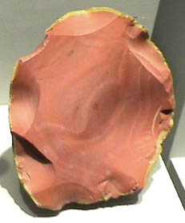

|
Quartz is silicon dioxide, SiO2. Quartz is abundant in the Earth's crust, being the chemically simplest form of the silicates. Microcrystalline quartz rocks are collectively called chert, but varieties of chert are given other specific names. One of the distinctive varieties of quartz is called jasper. The sample at right is about 12x15 cm and is from Erzgebirge, Sachsen, Germany. All the samples here are displayed in the Smithsonian Museum of Natural History.
|  |